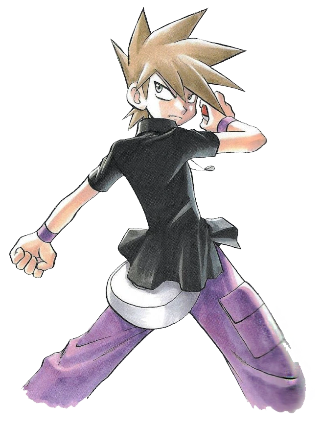
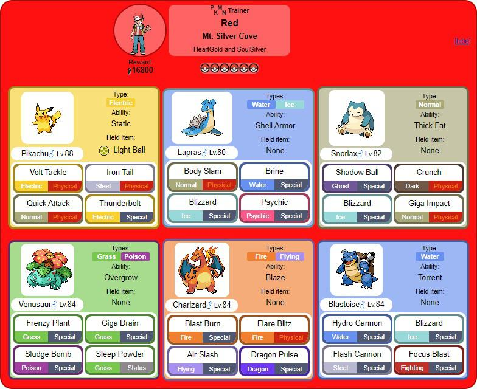
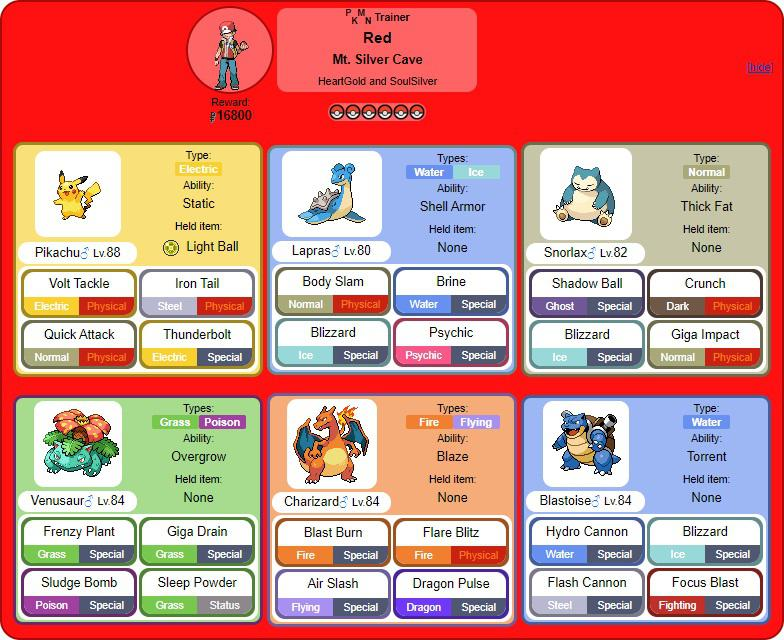

Blue Carvalho é rival do jogador em jogos da Geração I e seus remakes, e é um campeão de Pokémon por um tempo curto.
Ele é o neto do Professor Carvalho, o principal pesquisador de Pokémon na região de Kanto. Blue é um treinador habilidoso e ambicioso, conhecido por sua confiança e determinação.
O time de Blue é composto por uma variedade de Pokémon, incluindo alguns dos mais populares da primeira geração. Seu time inicial pode variar dependendo da escolha do jogador, o pokémon inicial dele será do tipo que tem vantagem ao seu.
Red é protagonista masculino dos jogos Pokémon da Geração I. Ele é um treinador de Pokémon silencioso e determinado, conhecido por sua habilidade e coragem. Red é frequentemente retratado como um personagem lendário na série, sendo o campeão mais forte que já passou pela Liga Pokémon de Kanto.
 

Esse time do Red é composto por alguns dos Pokémon mais poderosos e icônicos da primeira geração, incluindo Charizard, Blastoise, Venusaur, Pikachu, Snorlax e Lapras. Esse time é conhecido por sua força e versatilidade, tornando Red um adversário formidável na Liga Pokémon.
Leaf é a protagonista feminina dos jogos Pokémon da Geração I. Ela é uma treinadora de Pokémon determinada e corajosa, conhecida por sua inteligência e habilidades estratégicas.

Esse time da Leaf não é oficial, mas é uma representação comum dos Pokémon que ela poderia ter em sua equipe.